Regression comparison
Download resultsDataset
Training setting
Repulsion weight
Repulsion location
Compare repulsion locations
Method
Random points redraw every step and exclude all training inputs. Training and random use B points; combined uses 2B. Prediction axes match within each DE or BDKN row.
Functional repulsion
BetterWorse · relative rank within each column
DE
| Repulsion inputs | RMSE | NLL | Training seconds |
|---|---|---|---|
| Training | 59.52475 | 32.99001 | 6.77 |
| Random | 53.76834 | 11.50905 | 6.75 |
| Training + random | 56.05719 | 25.60917 | 6.86 |
BDKN
| Repulsion inputs | RMSE | NLL | Training seconds |
|---|---|---|---|
| Training | 58.41699 | 9.67563 | 6.90 |
| Random | 41.96433 | 5.70945 | 6.88 |
| Training + random | 54.31301 | 8.46699 | 7.00 |
Stage 1 · total loss and data fit
Repulsion loss R only
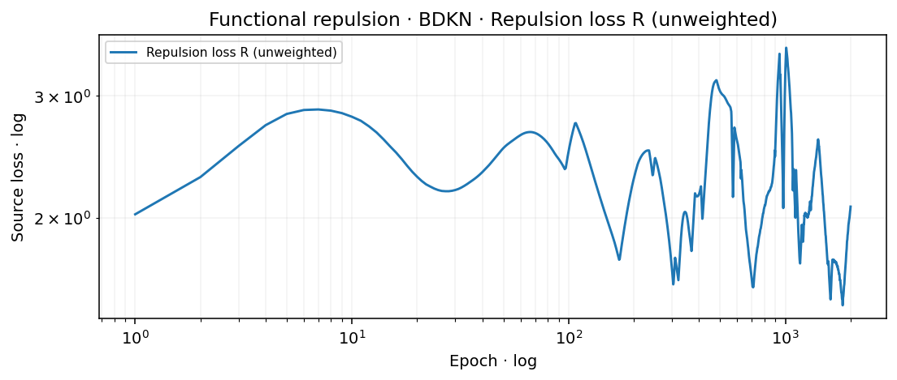
X: log · Y: log
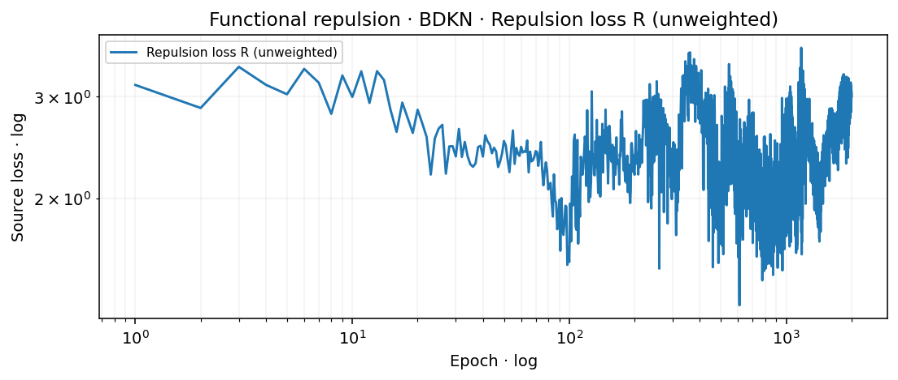
X: log · Y: log
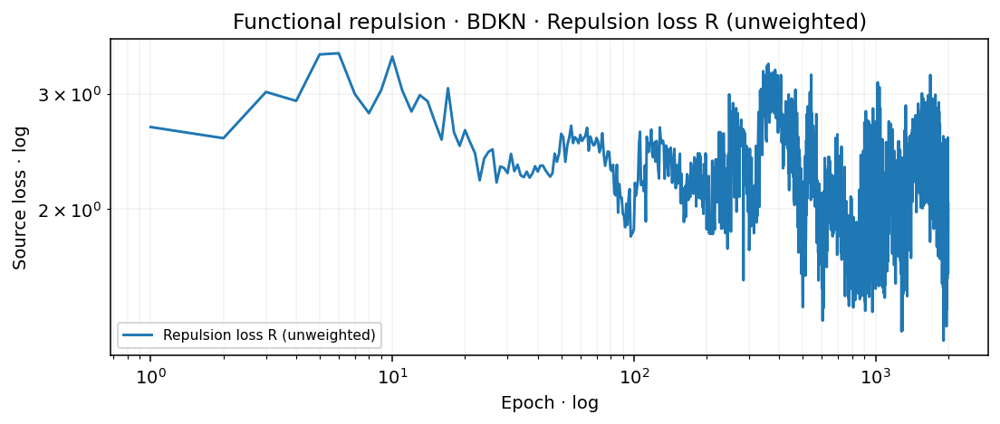
X: log · Y: log
Stage 2 · Bayesian marginal NLL
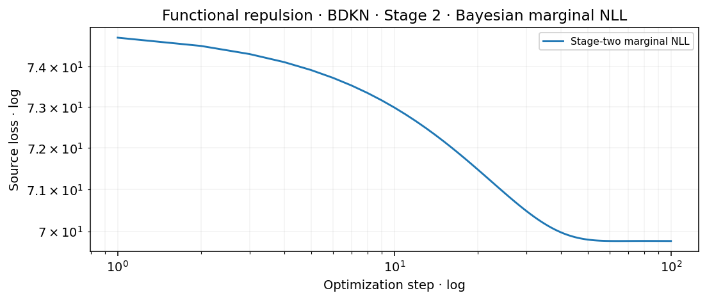
X: log · Y: log
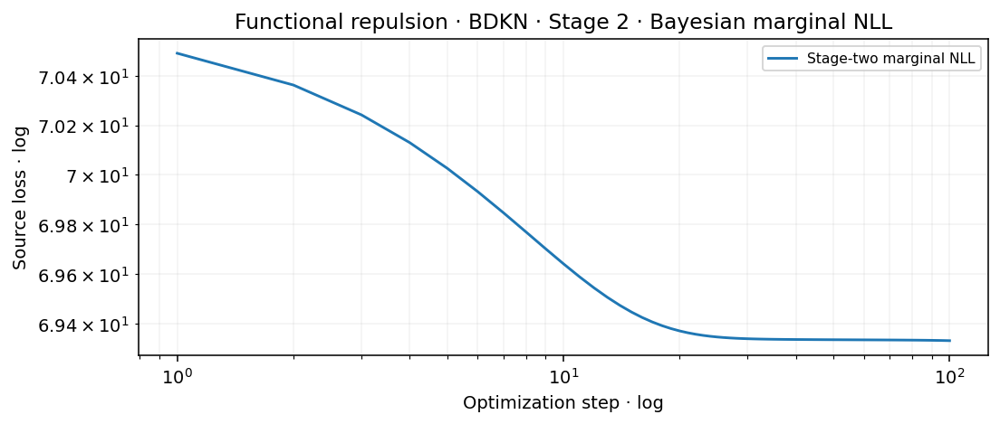
X: log · Y: log
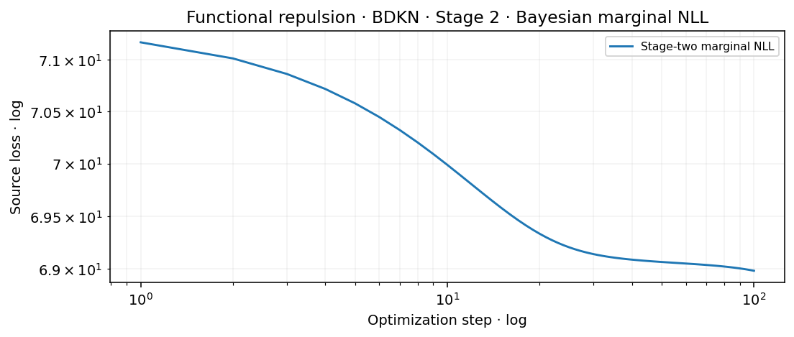
X: log · Y: log
First-order repulsion
BetterWorse · relative rank within each column
DE
| Repulsion inputs | RMSE | NLL | Training seconds |
|---|---|---|---|
| Training | 59.10869 | 42.31972 | 12.46 |
| Random | 56.17150 | 9.98556 | 13.25 |
| Training + random | 58.63622 | 11.02310 | 13.99 |
BDKN
| Repulsion inputs | RMSE | NLL | Training seconds |
|---|---|---|---|
| Training | 58.49351 | 10.33468 | 12.62 |
| Random | 50.96354 | 6.21788 | 13.38 |
| Training + random | 56.12491 | 6.93216 | 14.13 |
Stage 1 · total loss and data fit
Repulsion loss R only
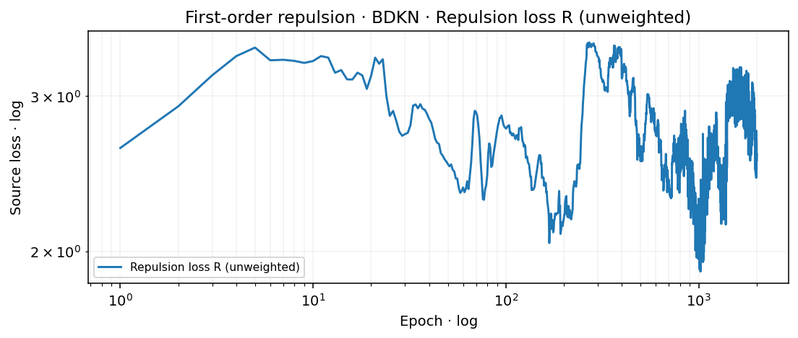
X: log · Y: log
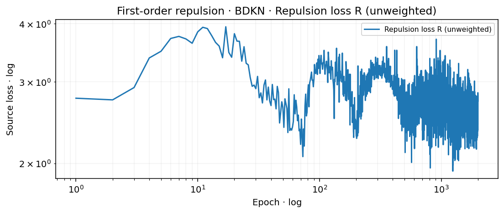
X: log · Y: log
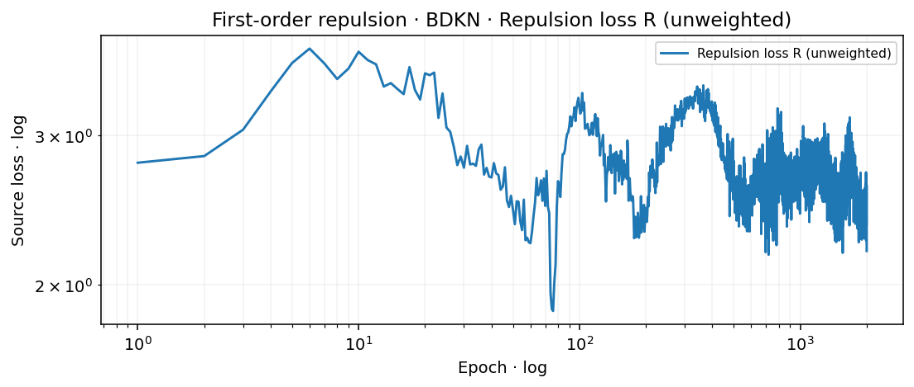
X: log · Y: log
Stage 2 · Bayesian marginal NLL
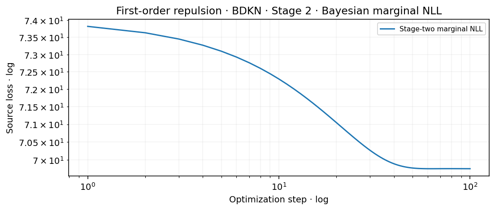
X: log · Y: log
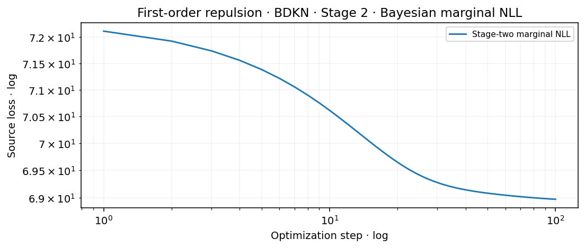
X: log · Y: log
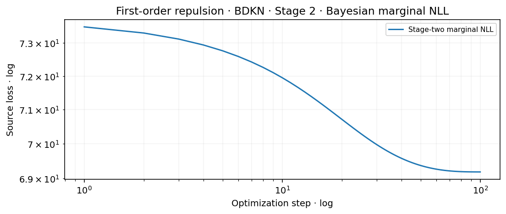
X: log · Y: log
Weight repulsion · location-independent
The loss compares network parameters directly. These same results apply to every location.
| Stage | RMSE | NLL | Training seconds |
|---|---|---|---|
| DE | 53.41951 | 6.96439 | 5.29 |
| BDKN | 49.99818 | 5.53728 | 5.41 |